配器法原理：繁體中文版
木管與銅管的結合
A. 木管與銅管的結合
木管與銅管可以把同一和弦分別交給兩種音色，同時並置；也可以採用前述三種方法：聲部分層、交叉與包夾。
1. 同度結合（音色的並置或對比）
這類結合具有旋律線條中音色組合的相同特性（參見第二章）。木管能加強銅管，使其柔和，並減弱銅管本身鮮明的特徵。可以採用下列配置：
| 2支小號＋2支長笛； 3支小號＋3支長笛； | 2支小號＋2支雙簧管； 3支小號＋3支雙簧管； | 2支小號＋2支豎笛。 3支小號＋3支豎笛。 |
也可以：
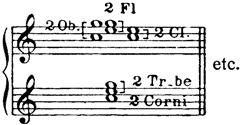
木管與銅管並置的配置圖。
- 2 Fl＝2支長笛、2 Ob.＝2支雙簧管、2 Cl.＝2支豎笛，2 Tr-be＝2支小號、2 Corni＝2支法國號；
- 上方木管與下方銅管重複相應和弦音，etc.＝依此類推。
以及：
| 2支法國號＋2支低音管； 3支法國號＋3支低音管； | 2支法國號＋2支豎笛； 3支法國號＋3支豎笛；以及： |
2支法國號＋2支低音管＋2支豎笛，等等。
3支長號＋3支低音管，或3支長號＋3支豎笛的組合，則非常少見。
讓全體銅管演奏一個和弦，再由全體二管編制木管重複同一和弦，能產生宏麗而統一的音色。
範例：
《雪孃》排練號315：2支法國號＋2支豎笛，以及2支法國號＋2支雙簧管（參見譜例236）。
譜例141：《沙皇的新娘》排練號50：4支法國號＋2支豎笛、2支低音管。
譜例142：《沙皇的新娘》排練號142：全體木管與銅管並置。
《伊凡雷帝》第二幕排練號30：並置與包夾（參見和弦表II，例8）。
譜例145：《薩特闊》排練號242：全體銅管＋長笛、豎笛。
《隱城基捷日傳說》開頭：法國號、長號＋豎笛、低音管（另參見排練號5，譜例249）。
*譜例146：《隱城基捷日傳說》排練號10：英國管、2支豎笛、低音管連奏＋4支法國號非連奏。
《隱城基捷日傳說》排練號324：全體銅管＋木管。
*譜例147：《金雞》排練號233：
| 小號＋雙簧管 法國號＋豎笛 | ] | 8. |
小號與法國號的悶塞音或加弱音器音色，與雙簧管、英國管相近；把這些樂器結合，可產生優美的音色。
範例：
譜例148：《俄羅斯復活節序曲》第11頁：法國號（＋，悶塞音）、小號（低音域）＋雙簧管、豎笛。
*《聖誕夜》，排練號154之前：全體銅管加弱音器＋木管。
*譜例149：《薩爾坦王的故事》排練號129：2支雙簧管、英國管＋3支加弱音器的小號（下方為3支豎笛）。
*譜例150：《薩爾坦王的故事》排練號131第17小節：相同組合，再加法國號。
*譜例151：《安塔爾》排練號7：雙簧管、英國管、2支低音管＋4支法國號（＋，悶塞音）。
法國號中音域的悶塞音，與豎笛的低音域結合，能產生優美而幽暗的音色：
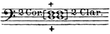
- 3 Cor.+＝3支法國號奏悶塞音，3 Clar.＝3支豎笛，以同度重複同一三聲部和弦；
- 上下兩個＋表示悶塞奏法，不是加上另一樂器。
如果把豎笛換成低音管，效果就會失去一部分特色。
範例：
*《不死的卡什切伊》排練號29第11小節：2支雙簧管、2支豎笛＋4支法國號（＋，悶塞音）。
《不死的卡什切伊》排練號107第6小節：2支豎笛、低音管＋3支法國號（＋，悶塞音）。
*《聖誕夜》第249頁：豎笛、低音管＋3支法國號（＋，悶塞音）。
*《姆拉達》第三幕排練號19：3支法國號（＋，悶塞音）＋3支低音管，以及3支法國號（＋，悶塞音）＋3支雙簧管（參見譜例259）。
2. 聲部分層（疊置）、交叉與包夾
前面已說過，低音管與法國號是最能調和木管組、銅管組的兩種樂器。把四聲部和聲交給2支低音管、2支法國號，尤其在弱奏樂段中，能得到非常均衡的音色，近似四支法國號的效果，卻稍微更透明。在強奏樂段，法國號會蓋過低音管，此時只用四支法國號較妥。前述弱奏配置宜採聲部交叉以融合音色，把協和音程交給法國號，不協和音程交給低音管：
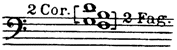 | 而非： | 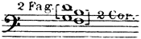 |
- 建議的交叉配置：2 Cor.為2支法國號，2 Fag.為2支低音管；
- 協和音程交給法國號，不協和音程交給低音管。
- 不建議的相反配置：2 Fag.為2支低音管，2 Cor.為2支法國號；
- 與左圖相比，音程的樂器分配互換。
也可以把低音管置於法國號之間；反過來的配置則不建議：
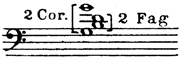
- 2 Cor.＝2支法國號，2 Fag.＝2支低音管；
- 法國號分置和弦外側，低音管置於中間。
小號以八度奏持續音時，也可在兩者之間嵌入其他聲部。在弱奏樂段，低音域長笛演奏三度，有時再加豎笛，置於小號八度之間，能產生優美而神祕的效果。一連串和弦進行中，宜把不動的聲部交給銅管，移動的聲部交給木管。
考量豎笛的音質，很少適合把它置於法國號之間。不過在較高音域、和聲上方的聲部，豎笛可以如雙簧管或長笛一樣，有效補足四支法國號弱奏的和弦；此時低音管可以在低八度重複低音：
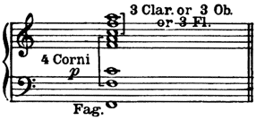
- 上方3 Clar. or 3 Ob. or 3 Fl.為3支豎笛，或3支雙簧管，或3支長笛；
- 下方4 Corni為4支法國號，p弱奏；
- Fag.為低音管，在低八度重複低音。
強奏時，法國號的音量比木管強；可把上方和聲聲部加倍，來取得平衡：-91-
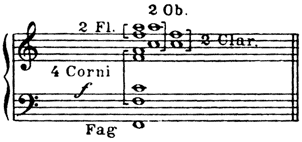
- 強奏時加強上方木管：2 Fl.＝2支長笛，2 Ob.＝2支雙簧管，3 Clar.＝3支豎笛；
- 4 Corni＝4支法國號，f強；
- Fag.低音管重複低音。
範例：
a）
分層。
*《薩特闊》交響音畫，排練號1、9：長笛、雙簧管、豎笛、法國號（和聲基礎）。
《薩特闊》交響音畫，排練號14之前：2支長笛、豎笛、法國號。
《薩特闊》交響音畫的最後和弦：長笛、豎笛、法國號。
*《安塔爾》排練號22：長笛、豎笛、法國號（和聲基礎）。
譜例152：《安塔爾》排練號56：3支長笛、4支法國號（和聲基礎）。
*《雪孃》排練號300：全體木管與法國號。
*《天方夜譚》第一及第四樂章的最後和弦。
*《俄羅斯復活節序曲》排練號D：長笛、豎笛、法國號；稍後小號與長號並置（參見譜例248）。
*譜例153：《聖誕夜》排練號212第10小節：木管與法國號；稍後加入小號與長號。
《聖誕夜》排練號215：
| 3支長笛＋3支豎笛 3支法國號 | ] | 8. |
*歌劇《薩特闊》排練號165：並置與分層。
譜例154：《薩特闊》排練號338：相同的配置。
譜例155：《塞爾維莉亞》排練號73：
| 3支長笛＋2支雙簧管、豎笛 4支法國號。 |
*譜例156：《隱城基捷日傳說》，排練號157之前：3支長笛、3支長號。
《隱城基捷日傳說》的最後和弦（參見和弦表III，例15）。
*《金雞》，排練號219之前：木管的混合音色、4支法國號。
b）
交叉。
*《聖誕夜》，排練號53之前：法國號、低音管。
《聖誕夜》排練號107：豎笛、法國號、低音管。
*《薩爾坦王的故事》，排練號62之前：法國號、低音管。
*《金雞》排練號220：3支長號、2支低音管、倍低音管（參見譜例232）。
c）
包夾：
譜例158：《伊凡雷帝》第一幕排練號33：長笛置於法國號之間；稍後法國號置於低音管之間。
譜例159：《雪孃》排練號183：
| 小號 長笛、2支豎笛 小號 |
*《薩特闊》交響音畫，排練號3：
| 豎笛＋低音管 4支法國號 豎笛＋低音管 |
*《安塔爾》，排練號37之前：
| 低音管 2支法國號（＋，悶塞音） 豎笛 |
*歌劇《薩特闊》排練號105：和聲基礎；雙簧管置於小號之間（參見譜例260）。
*譜例160：歌劇《薩特闊》，排練號155之前：長笛置於小號之間。
*《沙皇的新娘》序曲結尾：低音管置於法國號之間（參見和弦表III，例14）。
*譜例161：《薩爾坦王的故事》排練號50：小號置於重複配置的木管聲部之間。
譜例162：《薩爾坦王的故事》排練號59：長笛置於小號之間；豎笛置於法國號之間。
*譜例163：《隱城基捷日傳說》排練號82：雙簧管、豎笛置於小號之間。
悶塞法國號與雙簧管、英國管之間，具有前述的音色關係，因此可以讓這些樂器同時參與一個和弦，以p弱或sfp突強後立即弱演奏：
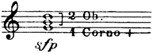
- 2 Ob.＝2支雙簧管，4 Corno+＝4支法國號奏悶塞音；
- sfp為突強後立即轉弱，音符與各聲部括號依原圖。
範例：
*《聖誕夜》排練號75：3支法國號（＋，悶塞音）＋雙簧管。
《沙皇的新娘》排練號123：雙簧管、英國管、法國號（＋，悶塞音）（參見譜例240）。
*《隱城基捷日傳說》排練號244：豎笛、2支長笛＋2支雙簧管、英國管、3支法國號（＋，悶塞音）。
*譜例164：《隱城基捷日傳說》，排練號256之前：
| 2支雙簧管、英國管 3支法國號（＋，悶塞音） | ] | 8. |
*另參見《薩爾坦王的故事》，排練號115之前：
| 法國號（＋，悶塞音） 2支長笛＋2支低音管 | （譜例110）。 |
若小號、長號參與一個和弦，長笛、雙簧管與豎笛最好擔任小號上方的和聲聲部。應採如下配置：-93-
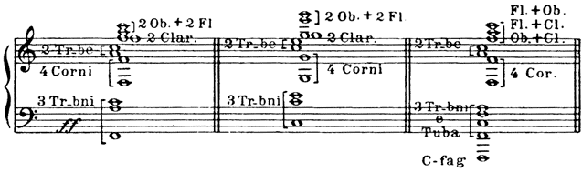
三種木管置於銅管上方的配置，由左至右閱讀。
- Tr-be為小號、Corni／Cor.為法國號、Tr-bni為長號、Tuba為低音號、C-fag為倍低音管；
- Ob.雙簧管、Fl.長笛、Clar./Cl.豎笛。
第一例上方2支雙簧管＋2支長笛、2支豎笛，下方2支小號、4支法國號、3支長號，ff甚強。
第二例同類上方木管，下方2支小號、4支法國號、3支長號。
第三例上方三個混合音色為長笛＋雙簧管、長笛＋豎笛、雙簧管＋豎笛，下方2支小號、4支法國號、3支長號、低音號與倍低音管。
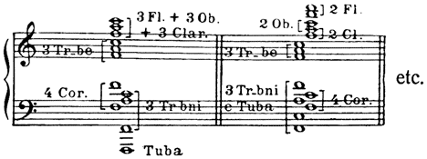
兩種上方木管配置，由左至右。
- 左例3支長笛＋3支雙簧管，再加3支豎笛；
- 下方3支小號、4支法國號、3支長號與低音號。
- 右例2支長笛、2支雙簧管、2支豎笛；
- 下方3支小號、3支長號與低音號、4支法國號。
Tr-be小號、Cor.法國號、Tr-bni長號、Tuba低音號，etc.依此類推。
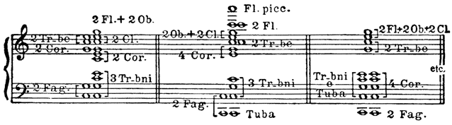
三種木管與銅管和弦配置，由左至右。
- 左例2支長笛＋2支雙簧管、2支豎笛、2支小號、兩組各2支法國號、2支低音管、3支長號；
- 中例短笛（Fl.picc.）、2支長笛、2支雙簧管＋2支豎笛、2支小號、4支法國號、3支長號、2支低音管與低音號；
- 右例2支長笛＋2支雙簧管＋2支豎笛、2支小號、3支長號與低音號、4支法國號，以及2支低音管。
原圖括號決定每組實際分配，etc.為依此類推。
範例：
*《薩特闊》交響音畫，排練號20。
*譜例165：《五月之夜》第一幕排練號Ee：3支長號、2支雙簧管＋2支豎笛＋2支低音管。
《五月之夜》第325頁：最後和弦，C大調（參見和弦表I，例1）。
*譜例166：《雪孃》排練號198；另參見排練號200及210之前。
*《姆拉達》第一幕結尾（參見和弦表II，例13）；第二幕排練號20。
譜例170：歌劇《薩特闊》排練號244：音域跨度很大的和弦；低音管到達低音域的下限。
歌劇《薩特闊》排練號142、239；另參見3（譜例86）。
*《沙皇的新娘》排練號179（參見譜例243）。
《安塔爾》排練號65：在長號和弦上，法國號與木管交替奏出音符（參見譜例32）。
一般觀察。為全體木管配器時，不一定總能確保適當的平衡。例如，一連串和弦中若旋律位置不斷改變，樂器分配便須以正確的聲部進行為優先。不過，實際演奏時，下列聲學現象可以抵銷一些音色的不均衡：每個和弦中，相隔八度的聲部會彼此加強，最低音域的泛音與最高音域的聲音重合，並予以支持。即使如此，盡可能取得最佳音色平衡，仍完全是配器者的責任；遇到困難時，可以審慎區分力度，讓木管比銅管高一級力度，以取得平衡。
查看英文原文
A. Combination of wind and brass.
Wind and brass instruments may be combined by the method of placing a chord in one timbre side by side with the same chord in another timbre, or by any of the three methods already described: overlaying, crossing and enclosure of parts.
1. In unison (juxtaposition or contrast of tone qualities).
This class of combination possesses the same features as combinations in the melodic line (cf. Chap. II). Wood-wind reinforces the brass, softens it and reduces its characteristic qualities. Arrangements such as the following are possible:
| 2 Trumpets + 2 Fl.; 3 Trumpets + 3 Fl.; |
2 Trumpets + 2 Ob.; 3 Trumpets + 3 Ob.; |
2 Trumpets + 2 Cl. 3 Trumpets + 3 Cl. |
Also
as well as:
| 2 Horns + 2 Fag.; 3 Horns + 3 Fag.; |
2 Horns + 2 Cl.; 3 Horns + 3 Cl.; and: |
2 Horns + 2 Fag. + 2 Cl. etc.
The combinations 3 Trombones + 3 Fag., or 3 Trombones + 3 Cl. are very rare.
A chord scored for full brass doubled by the same chords scored for full wood-wind (in pairs) produces a magnificent and uniform tone.
Examples:
Snegourotchka 315—2 Horns + 2 Cl. and 2 Horns + 2 Ob. (cf. Ex. 236).
No. 141. The Tsar's Bride 50—4 Horns + 2 Cl., 2 Fag.
No. 142."""142—Juxtaposition of full wind and brass.
Ivan the Terrible, Act II 30—Juxtaposition and enclosure (cf. Table of chords II, Ex. 8).
No. 143. The Christmas Night 165—4 Horns + Fl., Cl., Fag.-89-
* No. 144. Sadko, before 79—Horn, Trumpet + doubled wood-wind.[15]
No. 145."242—Full brass + Fl., Cl.
Legend of Kitesh, beginning—Horn, Trombones + Cl., Fag. (cf. also 5—Ex. 249).
* No. 146. Legend of Kitesh 10—Eng. horn, 2 Cl., Fag. legato + 4 Horns non legato.
"""324—Full brass + wind.
* No. 147. The Golden Cockerel 233—
| Trumpets + Ob. Horn + Cl. |
] | 8. |
Stopped or muted notes in trumpets and horns resemble the oboe and Eng. horn in quality; the combination of these instruments produces a magnificent tone.
Examples:
No. 148. Russian Easter Fête, p. 11.—Horn (+), Trumpets (low register) + Ob., Cl.
* The Christmas Night, before 154—Full muted brass + wind.
* No. 149. Tsar Saltan 129—2 Ob., Eng. horn, + 3 Trumpets muted (3 Cl. at the bottom).
* No. 150.""131 17th bar.—Same combination with added horns.
* No. 151. Antar 7—Ob., Eng. horn, 2 Fag. + 4 Horns (+).
A beautiful dark tone is derived from the combination of middle notes in stopped horns and deep notes in the clarinet:
If bassoons are substituted for clarinets the effect loses part of its character.
Examples:
* Kashtcheï the Immortal 29, 11th bar,—2 Ob., 2 Cl. + 4 Horns (+).
"""107, 6th bar.—2 Cl., Fag. + 3 Horns (+).
* The Christmas Night, p. 249—Cl., Fag. + 3 Horns (+).
* Mlada, Act III 19—3 Horns (+) + 3 Fag. and 3 Horns (+) + 3 Ob. (cf. Ex. 259).
2. Overlaying (superposition), crossing, enclosure of parts.
It has already been stated that the bassoon and horn are the two instruments best capable of reconciling the groups of wood-wind and brass. Four-part harmony given to two bassoons and two horns, especially in soft passages, yields a finely-balanced tone recalling the effect of a quartet of horns, but possessing slightly greater transparence. In forte passages the horns overwhelm the bassoons, and it is wiser to employ four horns alone. In the former case crossing of parts is to be recommended for the purposes of blend, the concords being given to the horns, the discords to the bassoons:
| and not: | ||
| [ | [ |
Bassoons may also be written inside the horns, but the inverse process is not to be recommended:
The same insetting of parts may be used for sustained trumpet notes in octaves. In soft passages, thirds played in the low register of the flutes, sometimes combined with clarinets, produce a beautiful mysterious effect between trumpets in octaves. In a chain of consecutive chords it is advisable to entrust the stationary parts to the brass, the moving parts to the wood-wind.
Clarinets, on account of their tone quality should rarely be set inside the horns, but, in the upper register, and in the higher harmonic parts, a chord of four horns, (piano), may be completed by clarinets as effectively as by oboes or flutes; the bassoon may then double the base an octave below:
Played forte, the horns are more powerful than the wood-wind; balance may be established by doubling the upper harmonic parts:-91-
Examples:
a）
Superposition.
* Sadko, Symphonic Tableau 1, 9—Fl., Ob., Cl., Horn (basis).
"before 14—2 Fl., Cl., Horns.
"final chord—Fl., Cl., Horn.
* Antar 22—Fl., Cl., Horns (basis).
No. 152. Antar 56—3 Fl., 4 Horns (basis).
* Snegourotchka 300—Full wind and horns.
* Shéhérazade—Final chords of 1st and 4th movements.
* Russian Easter Fête D—Fl., Cl., Horn; later trumpets and trombones in juxtaposition (cf. Ex. 248).
* No. 153. The Christmas Night 212, 10th bar.—Wind and Horns; trumpets and trombones added later.
"""215
| 3 Fl. + 3 Cl. 3 Horns |
] | 8. |
* Sadko, Opera 165—Juxtaposition and Superposition.
No. 154. Sadko 338—Same distribution.
No. 155. Servilia 73
| 3 Fl + 2 Ob., Cl. 4 Horns. |
* No. 156. Legend of Kitesh, before 157—3 Flutes, 3 Trombones.
"""final chord (cf. Table III of chords, Ex. 15).
* The Golden Cockerel, before 219—Mixed timbre of wood-wind, 4 Horns.
b）
Crossing.
* The Christmas Night, before 53—Horn, Fag.
"""107—Clar., Horn, Fag.
* Legend of Tsar Saltan, before 62—Horn, Fag.
* The Golden Cockerel 220—3 Trombones, 2 Fag., C-fag. (cf. Ex. 232).
* No. 157. Antar, before 30—Wood-wind, Horns, then Trumpets.-92-
c）
Enclosure:
No. 158. Ivan the Terrible, Act I 33—Flutes within horns; later horns within bassoons.
No. 159. Snegourotchka 183—
| Trumpet Fl., 2 Cl. Trumpet |
* Sadko, symphonic tableau 3—
| Cl. + Fag. 4 Horns Cl. + Fag. |
* Antar before 37—
| Fag. 2 Horns (+) Cl. |
* Sadko, Opera 105—Harmonic basis; oboes within trumpets (cf. Ex. 260).
* No. 160. Sadko, Opera, before 155—Flutes within trumpets.
* The Tsar's Bride, end of Overture—Bassoons within horns (cf. Table III of chords, Ex. 14).
* No. 161. Tsar Saltan 50—Trumpets within wood-wind doubled.
No. 162.""59—Flutes within trumpets; clarinets within horns.
* No. 163. Legend of Kitesh 82—Oboes and clarinets within trumpets.
The relationship which has been shown to exist between stopped horns and oboe or Eng. horn authorizes the simultaneous use of these instruments in one and the same chord, played p or sfp:
Examples:
* The Christmas Night 75—3 Horns (+) + Oboe.
The Tsar's Bride 123—Ob., Eng. horn, Horn (+) (cf. Ex. 240).
* Legend of Kitesh 244—Cl., 2 Fl., + 2 Ob., Eng. horn, 3 Horn (+).
* No. 164. Legend of Kitesh, before 256—
| 2 Ob., Eng. horn 3 Horns (+) |
] | 8. |
* Cf. also Tsar Saltan, before 115—
| Horn (+) 2 Fl. + 2 Fag. |
(Ex. 110). |
If trumpets and trombones take part in a chord, flutes, oboes and clarinets are better used to form the harmonic part above the trumpets. The following should be the arrangement:-93-
Examples:
* Sadko, symphonic tableau 20.
* No. 165. The May Night, Act I Ee—3 Trombones, 2 Ob. + 2 Cl. + 2 Fag.
"""p. 325.—Final chord, C maj. (cf. Table I of chords, Ex. 1).
* No. 166. Snegourotchka 198; cf. also 200 and before 210.
* Shéhérazade, 1st movement E, 2nd movement P, 3rd movement M, 4th movement p. 203 (cf. Ex. 195, 19, 210, 77).
No. 167. The Christmas Night 205; cf. also 161, 212, 14th bar. (Ex. 100, 153).
* Mlada, end of Act I (cf. Chord Table II, Ex. 13). Act II 20.
No. 168-169. Sadko, Opera, before 249, 302; cf. also Ex. 120. -94-
No. 170. Sadko, Opera 244—Chord of widely extended range; bassoons at the limit of low compass.
""142, 239; cf. also 3 (Ex. 86).
* The Tsar's Bride 179 (cf. Ex. 243).
Antar 65—Alternation of notes in horns and wood-wind on trombone chords (cf. Ex. 32).
General observations. It is not always possible to secure proper balance in scoring for full wood-wind. For instance, in a succession of chords where the melodic position is constantly changing, distribution is subordinate to correct progression of parts. In practice, however, any inequality of tone may be counterbalanced by the following acoustic phenomenon: in every chord the parts in octaves strengthen one another, the harmonic sounds in the lowest register coinciding with and supporting those in the highest. In spite of this fact it rests entirely with the orchestrator to obtain the best possible balance of tone; in difficult cases this may be secured by judicious dynamic grading, marking the wood-wind one degree louder than the brass.
返回引用位置
- 譜例144：《薩特闊》（原標第121頁，英文原題稱「僅木管」）
- 譜例145：《薩特闊》
- 譜例146：《隱城基捷日傳說》
- 譜例147：《金雞》
- 譜例148：《俄羅斯復活節序曲》（原標第11頁）
- 譜例149：《薩爾坦王的故事》
- 譜例150：《薩爾坦王的故事》（原標第219頁）
- 譜例151：《安塔爾》
- 譜例152：《安塔爾》
- 譜例153：《聖誕夜》（原標第376頁）
- 譜例154：《薩特闊》
- 譜例155：《塞爾維莉亞》
- 譜例156：《隱城基捷日傳說》（原標第252頁）
- 譜例157：《安塔爾》
- 譜例158：《伊凡雷帝》第一幕
- 譜例159：《雪孃》（原標第223頁）
- 譜例160：《薩特闊》（原標第231頁）
- 譜例161：《薩爾坦王的故事》（原標第80頁）
- 譜例162：《薩爾坦王的故事》（原標第92頁）
- 譜例163：《隱城基捷日傳說》
- 譜例164：《隱城基捷日傳說》（原標第400頁）
- 譜例165：《五月之夜》第一幕（原標第105頁）
- 譜例166：《雪孃》
- 譜例167：《聖誕夜》
- 譜例168：《薩特闊》
- 譜例169：《薩特闊》（原標第492頁）
- 譜例170：《薩特闊》
- 譜例171：《安塔爾》
- 正文目錄
- 註釋